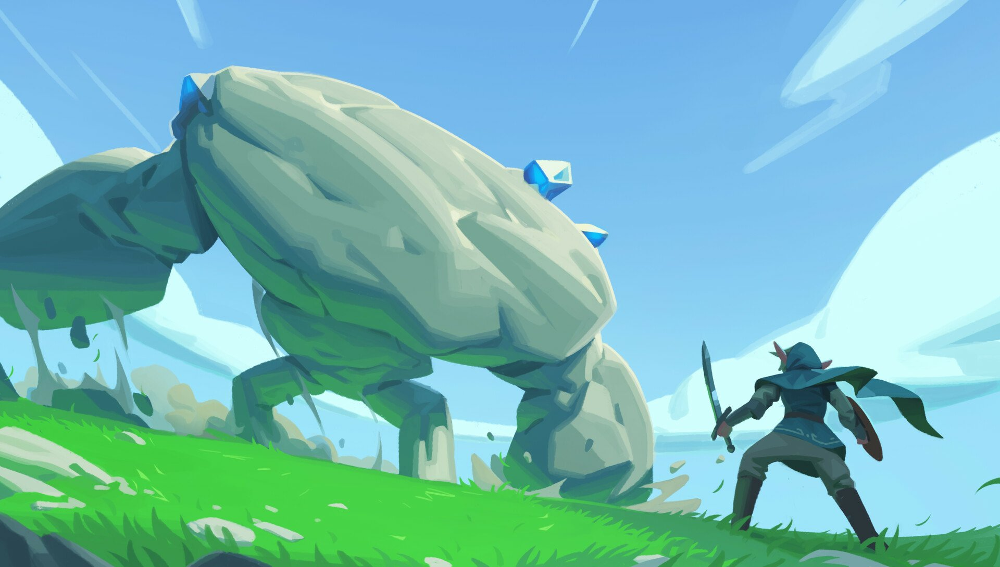
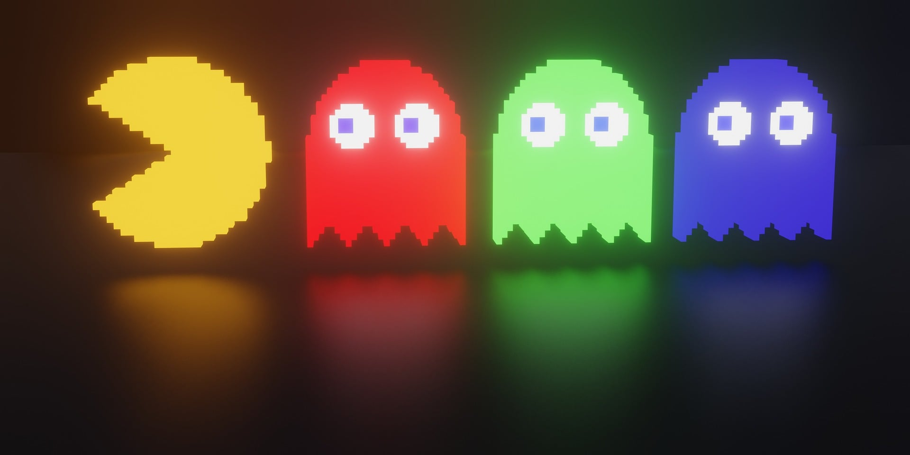
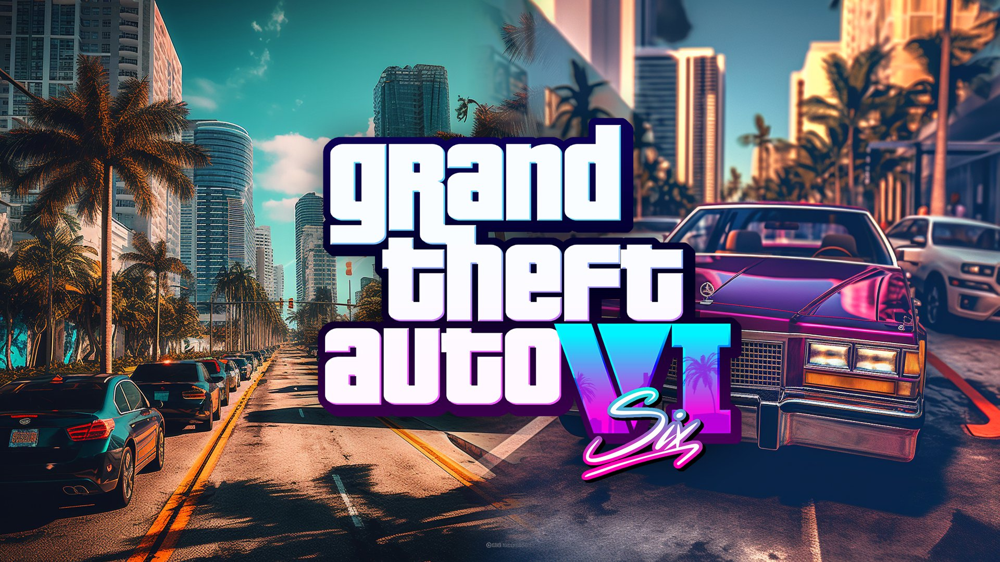
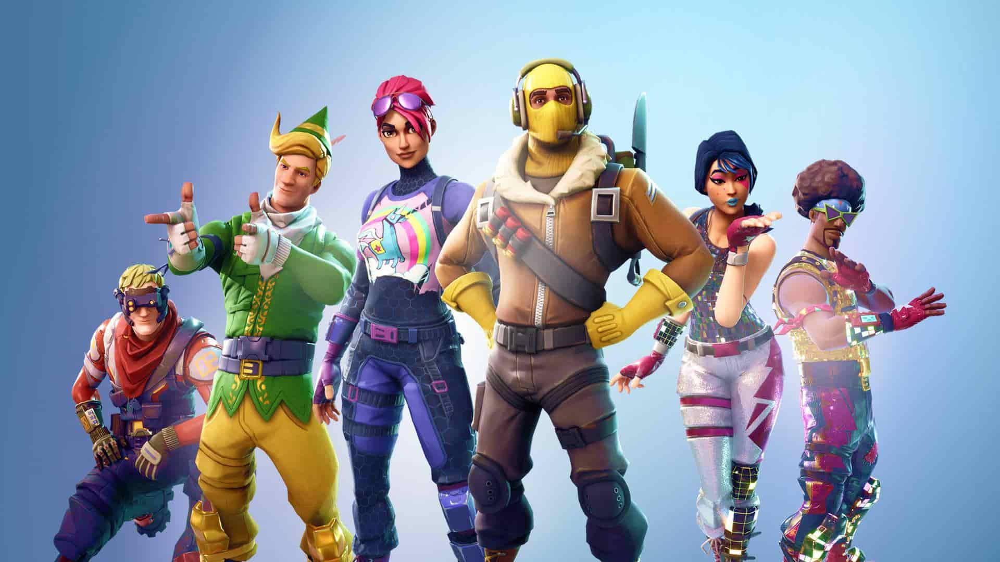

🎮 My Videos 🎮
Gaming Video
Here is a motion picture a teenager playing a fortnite on a ps5 console. The room is dimly lit, the teen if fully engaged in the game. He's wearing a black hoodie with a Playstation gaming headset. He's gripping the controller intensively out of focus it seems. After making what seems to be an impressive play, he celebrates with an enthusiastic fist pump in the air.
My Music
This is an upbeat high energy song with a nice rhythm, and catchy precussion . It describes the excitement of the game, winning, and chasing the next big win. Every beat feels like your powering up to the next level! 🎮
My Pictures
These are all pictures of my favorite games to play! Starting off on the top left being Legends of Zelda. This picture views a swordsman named Link fighting what looks to be a humanoid boulder. This game is very fun, spacious, and adventurous. A hgihly recommend this game. Legends of Zelda Breath of the Wild. The next picture on the top right is PacMan. This is still one of my favorite games to this day. It is so fun to anticipate the uncanny movements of the ghost while you collect all the pellets. The next picture on the bottom right is Fortnite chapter four which hasn't been my favorite for a while but one of the highest played games in the world still to this day, after being out since 2017. The final game I want to talk about is GTA. Although I haven't played this version of it it has been one of the most highly anticipated games of all time and I think it'll personally live up to the hype. I've enjoyed all five of the previous games and I can't wait for the release of this game tommorow!
|
 |
 |
|
 |
 |